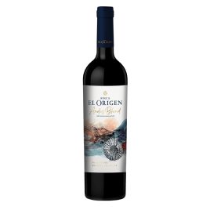
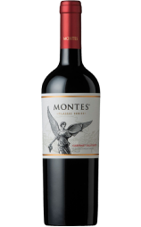
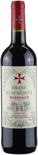
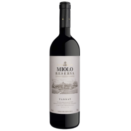

El Origen Blend 750ml
Argentina
É um corte de uvas Malbec, Cabernet Sauvignon e Bonarda, com
sabor intenso e equilibrado, notas de frutas vermelhas e taninos
suaves.

Cabernet Sauvignon
Chile
É um vinho tinto encorpado e seco, com notas de frutas escuras,
como cassis e amora, além de notas de carvalho, como baunilha e
tabaco.

Beausejour Bordeaux
França
É um vinho tinto de Bordeaux produzido a partir de uvas Merlot e
Cabernet Franc, com notas de frutas escuras e taninos firmes.

Miolo Reserva Tannat
Brasil
É um vinho tinto brasileiro produzido na região da Campanha
Gaúcha, com sabor intenso e taninos firmes, notas de frutas
vermelhas e toques de especiarias e baunilha.